six chats and a speech balloon
Draft: not published yet
The morning test was about sound. In the original, the opening plays only wind until Alucard reaches the first room with zombies and wargs, and the music starts there. During the scene with Death, only the voices play. I described it that way at 10:19 a.m., and it turned out Claude had written the opposite in its notes the night before, that the music only started after Death. The fix went in at 10:36, along with a correction to the notes.
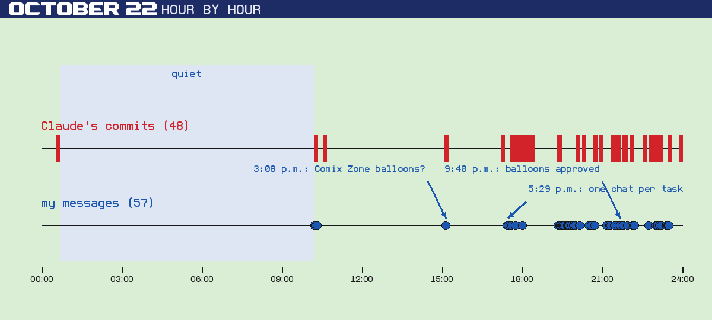
October 22. The afternoon is where the day really starts, and it doesn't stop until midnight.
Counterweight hunch
At 3:08 p.m. I reported that one room on the return visit was slow, until I killed two zombies and walked down the stairs. Then the speed came back. I asked whether it had anything to do with the switch and the gate in the top right of that room.
It did. The counterweight of that mechanism was rewriting 16 tiles of the map every frame, with the same values. Two minutes after my message, the port started ignoring writes that change nothing.
Lights out
The same report had a request. On the PlayStation, while the wind plays, the lights in the hallway are off: you only see silhouettes of the enemies, Alucard and the windows. The music starts when the lights come on. Could we do something like that on the Mega Drive?
Claude looked at how the original does it, and the answer was good news: on the PlayStation, the darkness, the lightning and the room lighting up are all palette swaps. No transparency, no layers. The port could do the same thing with its own palettes, prepared during the build.
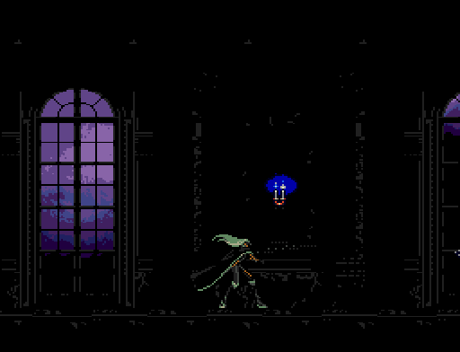
The hallway in the 9:37 p.m. build, rebuilt from that commit, with the lights still off: silhouettes, lit windows and a warg. The white box in the top right is the new text box, showing an enemy's name. In this run Alucard never walks far enough for the lights to come on.
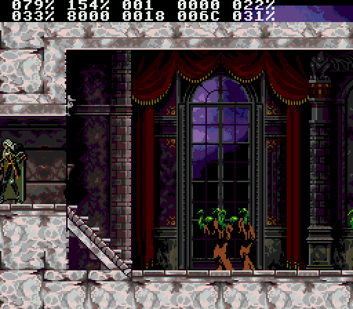
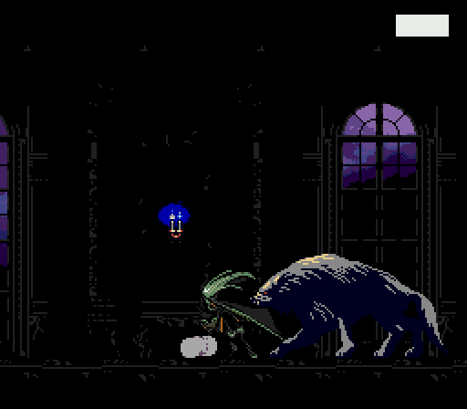
Three days apart. First: a hallway on October 19, every color converted straight from the PlayStation. Then: the dark hallway of October 22, lit only by the windows, with the new text box in the corner.
Death learns to talk
The scene with Death worked that afternoon, without any text. The original draws its dialogue in a box with portraits, which is expensive here. So I suggested something more Mega Drive: speech balloons like Comix Zone. I offered Claude a memory dump of the game, and later asked to use the Comix Zone font too, so the letters would match the balloons. The other texts, like the name of an item you pick up, went to a small box in the top right corner, since the original's translucent box at the bottom isn't an option without transparency.
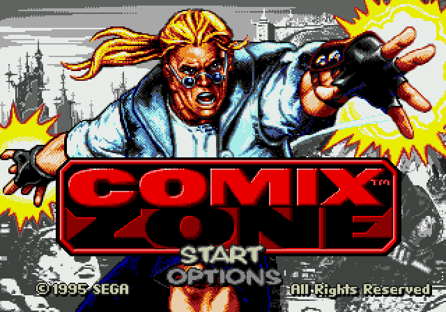
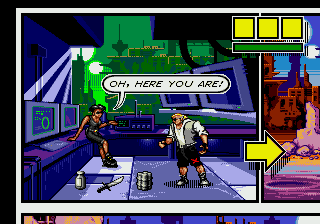
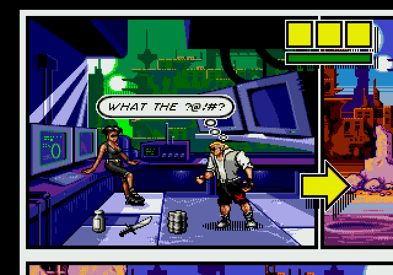
Comix Zone (Sega, 1995), captured from my own dump: the speech balloons I had in mind.
At 7:31 p.m. I found the first bug: every period came with a parenthesis. "I will not(." and "Still befriending mortals(.(.(."
At 9:27 p.m. I sent three rules for the balloons. They can't cover the speaker's face, so Claude has to account for how the sprites move during the scene. The balloon should lean toward whoever is listening, with the tail pointing back at the speaker's head. And they should appear half a second late, which probably applies to every dialogue in the game.
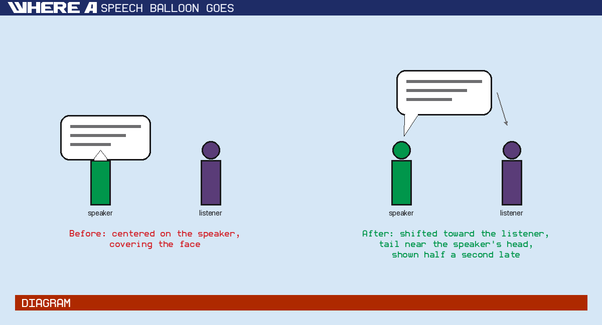
The three rules, drawn. Comic artists have known them for a century.
At 9:40 p.m. I wrote back in all caps that it looked really cool and asked to merge it into the main build.
One chat per task
At 5:29 p.m. I changed how I work. Instead of one long conversation, I opened a new chat for each item on the list, each with its own copy of the project: the prologue's sword and shield in one, the missing visual effects in another, the save room in a third. When one was done and tested, it got merged into the main build.
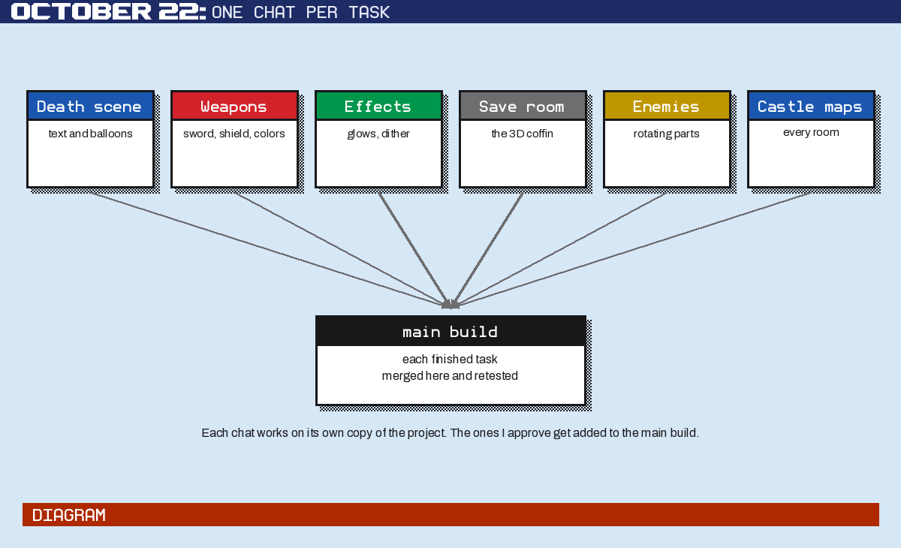
The day's shape. By midnight, six tasks were moving at the same time.
It's the most important decision of that week, and I didn't think of it as a decision. I just wanted to test more things per evening.
5 colors per weapon
Alucard uses one palette line of 15 colors. Every sword, shield and item he holds has to be drawn with those same colors. At 7:20 p.m. I asked how many we could reserve for weapons, then asked to see a preview of Alucard with four fewer colors. It looked fine. So I picked the fixed colors myself, as hex values: blue #4c00ff, light blue #1cb3ff, red #ff0026, and then asked Claude to merge two pairs of Alucard's shades to open a slot for a green, #02c93e. A gold joined them.
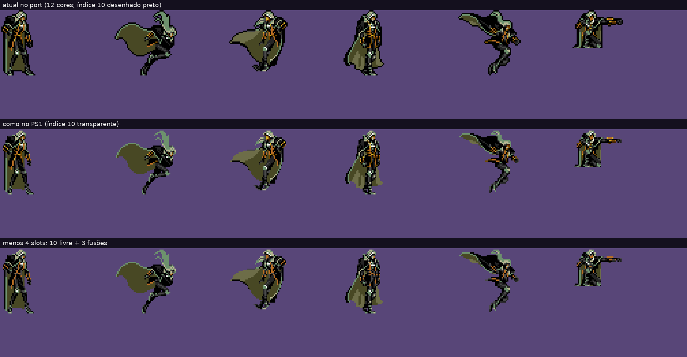
The preview I asked for at 7:26 p.m., labels in Portuguese. Top: Alucard in the port that day. Middle: as on the PlayStation. Bottom: four palette slots freed. Hard to tell apart, which was the point.
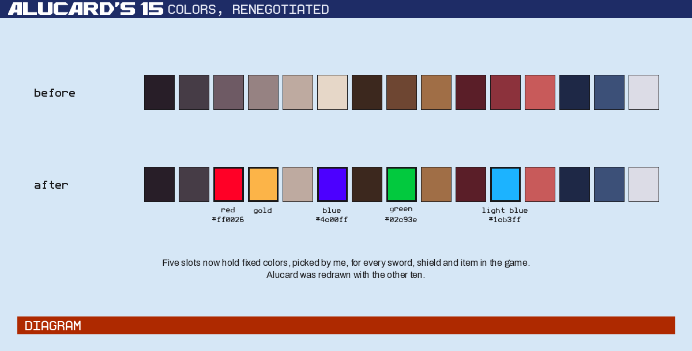
Schematic, not the real palette. Five of the fifteen slots now belong to the weapons.
Then I spent half an hour asking for preview sheets: every relic and item, every weapon's effect, Alucard with every cape in three poses, Alucard attacking with every weapon, Alucard holding every shield. One cape lost the highlight at its tip, so I asked to keep it with dithering. For the gray of the capes I chose between two options and made one the standard.
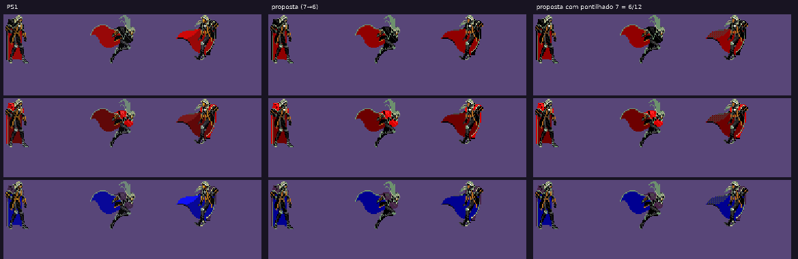
Claude's preview sheet, labels in Portuguese. Left to right: the PlayStation, the cape with one shade fewer, and the same with the lost shade rebuilt as a dither. Rows: Twilight Cloak, Blood Cloak, Reverse Cloak. The dithered column won.
At 8:08 p.m. I noticed that in Claude's preview the shield was behind Alucard and asked for it to cover him. Strictly speaking, the PlayStation draws it behind him too. I wanted it in front, and it's in front.
Items that blink
For the items on the floor, the first attempt was a dithered glow, following my own rule from earlier that day to use dithering for transparency whenever possible. It drowned the items. I asked for a short white blink instead, then refined it: three blinks at 15 Hz every two seconds, so the item stays visible between them. The relics got a white one-pixel outline blinking at 15 Hz and tiny white particles rising like smoke from a campfire. Finally, any dropped item blinks its outline for two seconds as soon as it appears.
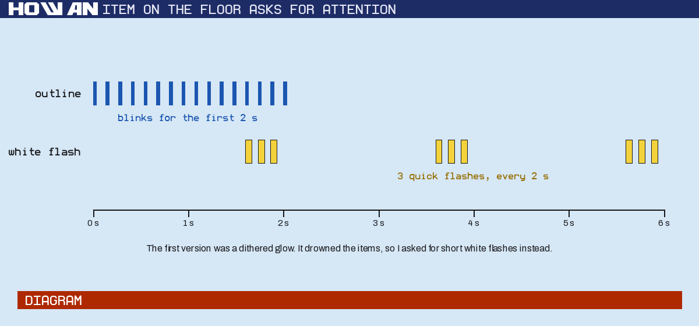
The final timing, second by second.
Pigsy's coffin
The save room in Symphony of the Night has a coffin that spins in 3D. Pigsy had already made a version that looks like it rotates on a Mega Drive, crediting the work of a developer called Space Bruce, part of a modern scene doing 3D on the 68000 alone. I sent Claude the names I found and asked to study them. By the evening there was a 3D coffin preview, and at 7:43 p.m. I asked the obvious question: does it run at 30 frames per second without slowdown?

Pigsy's Symphony of the Night demo on the Mega Drive, the one I wrote about in the first post. Screenshot from Pigsy's demos.
At 8:30 p.m. I tested the save room build. The game seemed to save, but I didn't see anything 3D on my emulator. Before the feedback, I asked Claude to add a rule to the project: from now on, always put Alucard in or next to the room I'm going to test.
Cheap AI, night shift
At 11:13 p.m. I asked whether Claude could drive a browser tab logged into Claude and hand out tasks to other chats all night: a big model supervising a row of small, cheaper ones, checking on each with a timer. Ten minutes later I was asking how subagents work, and whether the idea was worth it in tokens, time and quality. I went to bed with the question open.
The number
48 commits, 57 messages from me, six chats running at once by bedtime.
Tomorrow: enemies with rotating limbs, the castle's colors, and the coffin again.
I decide what the port should be, draw and pick colors, and test every build. The code, tools and measurements are written by Claude (Anthropic's AI). This post was drafted by Claude from my chat messages and the project's commit history, and reviewed by me. The screenshots and GIFs come from rebuilding the port's code exactly as it was at the time shown.